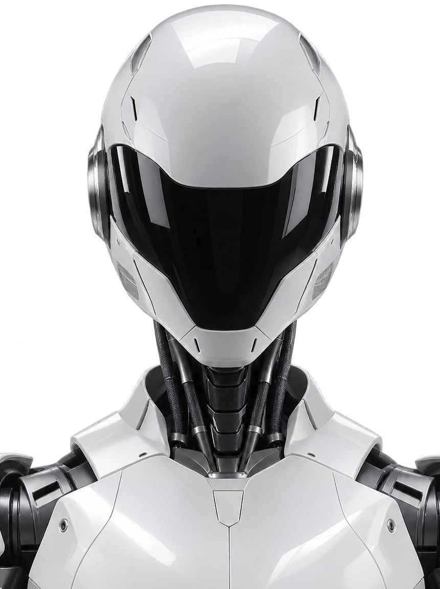

Рішення
для бізнесу.
Робототехнічні системи, що підтримують людей і підвищують керованість складних процесів.
Від завдання
до рішення.

Виробництво.
Точність там, де вона необхідна.
A7 створений для автоматизованих операцій, повторюваних задач і стабільної якості виробничих процесів.
Переглянути модельЛогістика.
Рух без зайвої складності.
Автономна платформа M3 допомагає оптимізувати внутрішні потоки та реагувати на динамічні зміни простору.
Переглянути модель
Сервіс.
Технологія ближче до людини.
Гуманоїд N1 задуманий для взаємодії в людському середовищі: від комунікації до допоміжних операцій.
Переглянути модель
Створимо наступний
крок разом.
Є питання, ідея співпраці чи сценарій застосування роботів? Розпочніть діалог із нашою командою.